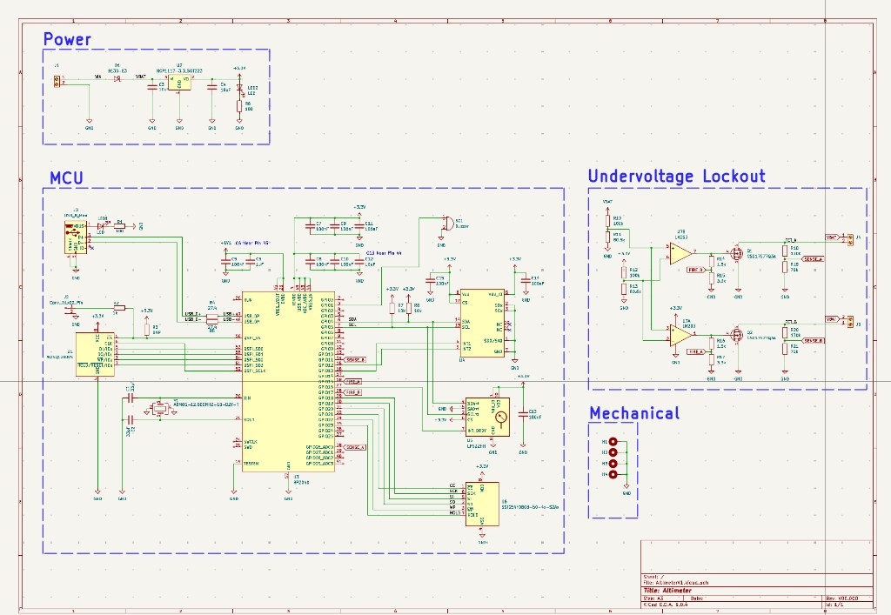
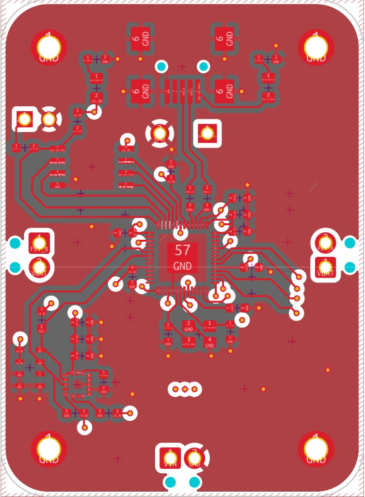
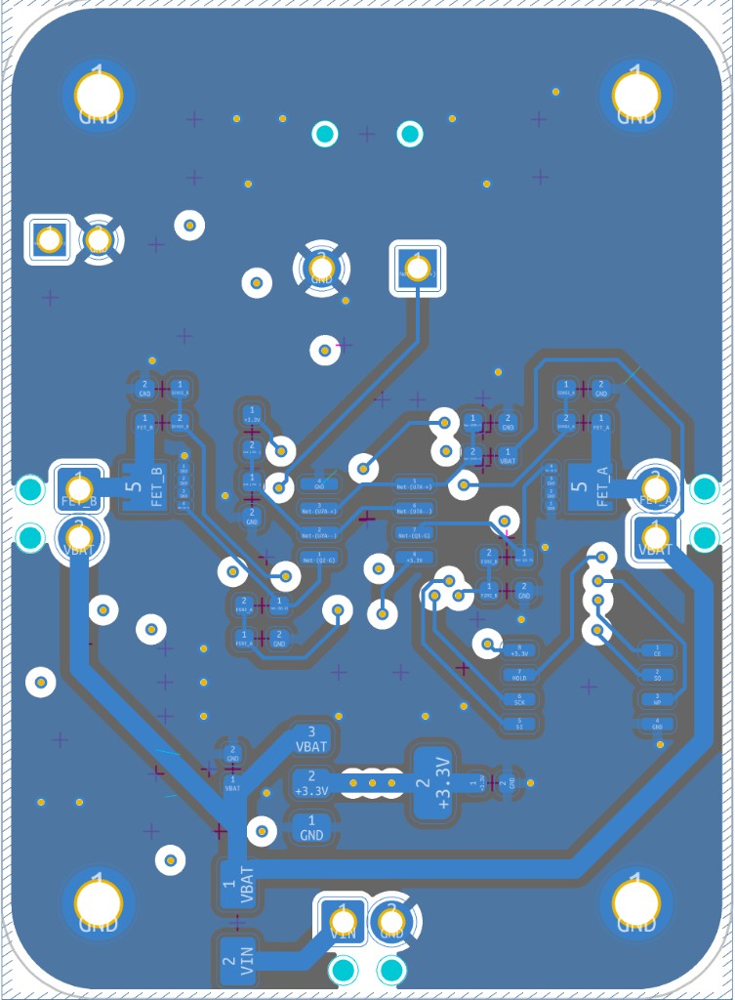

Embedded · Rockets
Custom Altimeter PCB
RP2040-based altimeter PCB for a model rocket, with redundant flash storage and safety-gated e-match deployment.




Overview
RP2040-based altimeter PCB for a model rocket, with redundant flash storage and safety-gated e-match deployment.
Notable features
- Integrated accelerometer + pressure sensor
- Redundant flash memory
- Safety-gated e-match deployment
- Mini-USB for data extraction
- Designed in KiCad
Project details (Situation · Task · Action · Result)
Situation
Off-the-shelf altimeters lacked flexibility, data access, and configurable firmware for a custom model rocket.
Task
Design and validate a compact PCB altimeter for altitude/acceleration measurement, datalogging, and event timing, with redundant flash memory in case primary flash is damaged.
Action
Designed schematic and 4-layer layout for an RP2040-based altimeter with USB communication, dual SPI flash memory, I2C accelerometer and barometric pressure sensor, and two e-matches driven by low-side N-channel MOSFETs gated by a battery voltage comparator.
Result
Fabrication-ready 4-layer altimeter PCB with defined power domains, clean schematics/layout rules, and safety-gated e-match deployment.